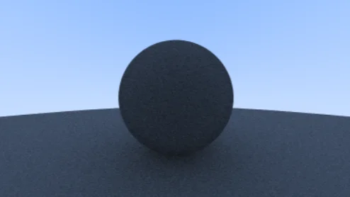
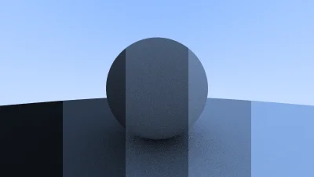
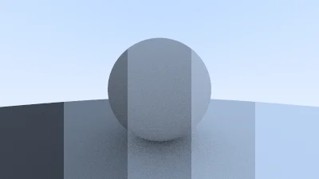

R-6 : Diffuse Material
Adding the first real material, diffuse (matte) surfaces. Rays bounce off randomly and lose energy with each bounce, producing the soft shadowing that makes raytracing look so good.

Part 6: Diffuse Material
Diffuse objects don't emit light, they take on the color of their surroundings, modulated by their own inherent color.
Light that hits a diffuse surface is scattered randomly in any direction. If a ray bounces deep into a crevice, the odds of it escaping are low, so those areas appear darker, producing natural-looking shadows.

Random Vector Utilities
Add these helpers to Vector3.h :
Vector3.h
#include "Utility.h"
...
inline Vector3 Random()
{
return Vector3(RandomDouble(), RandomDouble(), RandomDouble());
}
inline Vector3 Random(double min, double max)
{
return Vector3(RandomDouble(min,max), RandomDouble(min,max), RandomDouble(min,max));
}
// Rejection sampling: discard vectors outside the unit sphere
inline Vector3 RandomInUnitSphere()
{
while (true)
{
Vector3 p = Random(-1, 1);
if (p.SquaredLength() < 1) return p;
}
}
// Normalized version: point on the surface of the unit sphere
inline Vector3 RandomUnitVector()
{
return Unit(RandomInUnitSphere());
}
// Only return a vector pointing away from the surface (same hemisphere as normal)
inline Vector3 RandomOnHemisphere(const Vector3& normal)
{
Vector3 onUnitSphere = RandomUnitVector();
return (Dot(onUnitSphere, normal) > 0.0) ? onUnitSphere : -onUnitSphere;
}Bouncing Rays: RayColor
Rays bounce recursively. We add a depth limit so the recursion terminates, and attenuate by 50% on each bounce to simulate energy loss :
Camera.h
class Camera
{
public:
Camera() = default;
Camera(double imageWidth, double ratio, int samplePerPixel = 10, int maxDepth = 10):
aspectRatio(ratio), width(imageWidth),
sampleCount(samplePerPixel), maxBounceDepth(maxDepth){}
void Render(const Hittable& rWorld);
private:
int height, sampleCount, maxBounceDepth;
double aspectRatio, width;
Position center, originPixelLocation;
Vector3 pixelDeltaX, pixelDeltaY;
void Initialize();
Color RayColor(const Ray& rRay, int depth, const Hittable& rWorld) const;
Ray GetRay(int x, int y) const;
Vector3 PixelSampleSquared() const;
};Camera.cpp
Color Camera::RayColor(const Ray& rRay, int depth, const Hittable& rWorld) const
{
// No more light is gathered past the bounce limit
if (depth <= 0) return Color(0, 0, 0);
HitInfo hitInfo;
if (rWorld.Hit(rRay, Interval(0.001, infinity), hitInfo))
{
// Scatter the ray in a random direction on the hemisphere
Vector3 direction = hitInfo.normal + RandomUnitVector();
return 0.5 * RayColor(Ray(hitInfo.coordinates, direction), depth - 1, rWorld);
}
// Background gradient: white to sky blue
Vector3 unitDirection = Unit(rRay.GetDirection());
double blue = 0.5 * (unitDirection.y + 1.0);
return (1.0 - blue) * Color(1.0, 1.0, 1.0) + blue * Color(0.5, 0.7, 1.0);
}Note: The interval now starts at 0.001 instead of 0. This avoids shadow acne, a floating point issue where a ray re-intersects the surface it just bounced off.
Update the Render loop to pass the bounce depth :
Camera.cpp
for(int sample = 0; sample < sampleCount; sample++)
{
Ray ray = GetRay(x, y);
pixel += RayColor(ray, maxBounceDepth, rWorld);
}Gamma Correction
The render looks darker than it should because monitors display colors on a gamma-corrected (non-linear) scale. We transform the linear light values using gamma 2, a square root, before writing them out :
Color.h
inline double LinearToGamma(double linearComponent)
{
return linearComponent > 0 ? sqrt(linearComponent) : 0;
}
inline void WriteColor(std::ostream& out, Color pixel, int sampleCount)
{
double scale = 1.0 / sampleCount;
double r = LinearToGamma(pixel.x * scale);
double g = LinearToGamma(pixel.y * scale);
double b = LinearToGamma(pixel.z * scale);
static const Interval intensity(0.000, 0.999);
out << static_cast<int>(255.999 * intensity.Clamp(r)) << ' '
<< static_cast<int>(255.999 * intensity.Clamp(g)) << ' '
<< static_cast<int>(255.999 * intensity.Clamp(b)) << '\n';
}With that fix the spheres look a lot more realistic. Onwards!

